Dioses del Olimpo
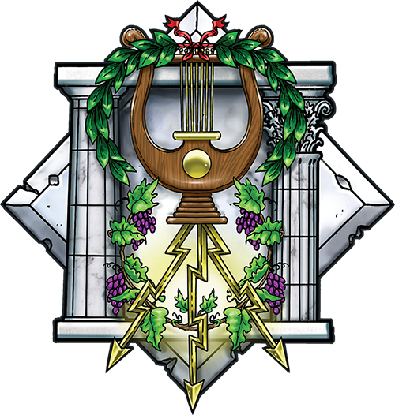
El panteon griego
Según la mitología clásica, tras el derrocamiento de los Titanes el nuevo panteón de dioses y diosas fue confirmado. Entre los principales dioses griegos estaban los olímpicos, residiendo sobre el Olimpo bajo la égida de Zeus, rey de dioses y hombres. Otros dioses importantes en el culto y la poesía fueron especialmente Afrodita, Apolo, Ares, Artemisa, Atenea, Deméter, Dioniso, Eros, Hades, Hécate, Hefesto, Hera, Hermes, Pan, Perséfone y Poseidón.

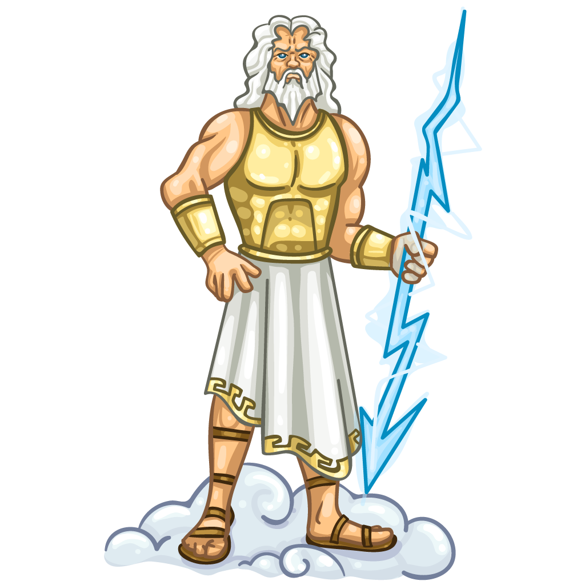
Zeus
En la mitología griega, Zeus, es «el principal y el más grande de los dioses», una divinidad a la que se denomina a veces con el título de «padre de los dioses y los hombres». Gobierna a los dioses olímpicos como un padre a una familia, de forma que incluso los que no eran sus hijos naturales se dirigen a él como tal. Es el rey de los dioses, supervisa el mundo entero y tiene su morada en el monte Olimpo.
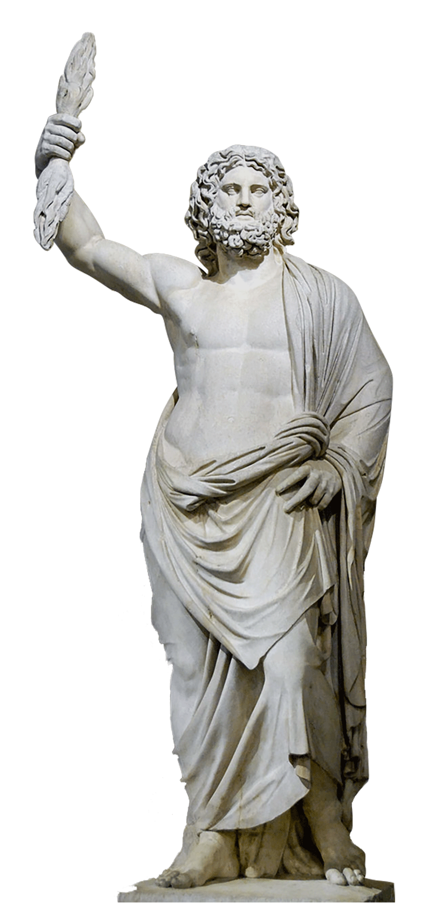
Hera
Hera es la diosa tutelar del matrimonio y la protectora de las mujeres en su papel de esposas en la sociedad civil. Así entre sus atribuciones también se cuentan el tránsito de la novia a la casa del esposo, la fecundidad, menstruación, parto y procreación de los pueblos.
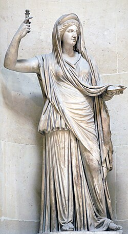
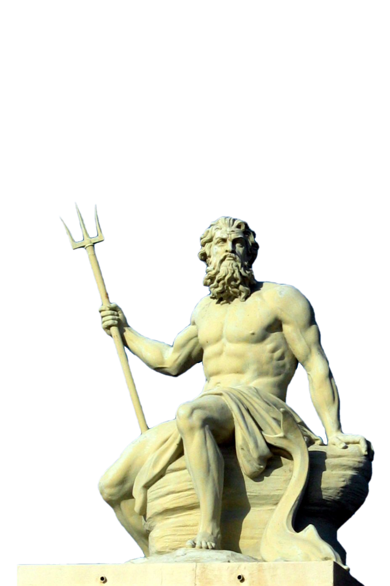
Poseidon
Poseidón o Posidón es el dios de los mares y, como «agitador de la tierra», de los terremotos en la mitología griega. Según Heródoto, su origen es lidio y su culto fue adoptado por los griegos a través de los pelasgos. También se lo asocia a menudo con los caballos. El nombre del dios marino etrusco Nethuns fue adoptado en latín para Neptuno en la mitología romana, siendo ambos dioses del mar análogos a Poseidón.
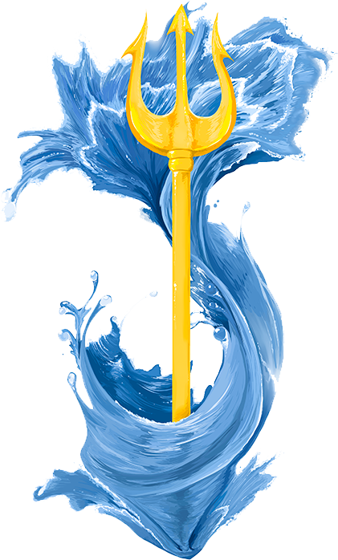
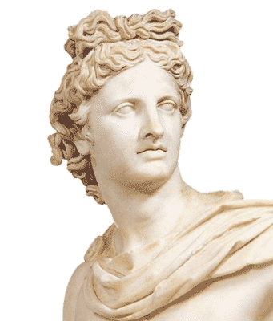
Apolo
Apolo es una de las deidades olímpicas más importantes y versátiles de la mitología griega y romana, conocido como el dios de la luz, el sol, la música, la poesía, la medicina, la adivinación (oráculo de Delfos) y el tiro con arco. Hijo de Zeus y Leto, y gemelo de Artemisa, representa la belleza masculina, el orden, la armonía y la razón.
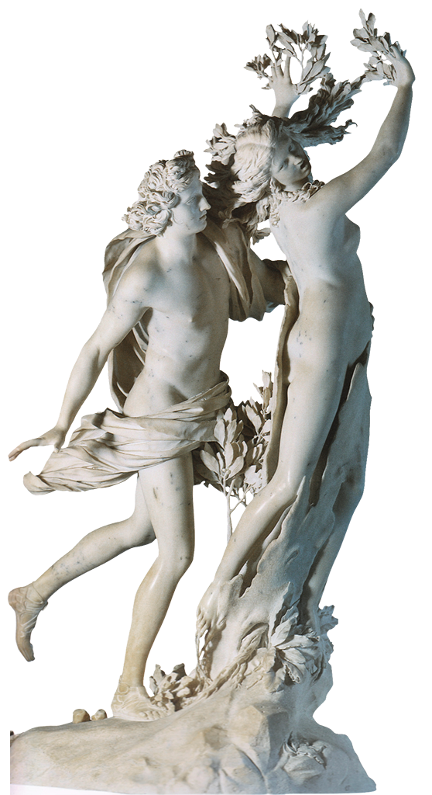
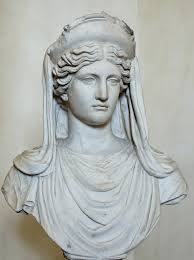
Demeter
Deméter es la diosa griega de la agricultura, la cosecha, la fertilidad de la tierra y las estaciones, una de las principales deidades olímpicas, hija de Crono y Rea y hermana de Zeus. Famosa por la búsqueda de su hija Perséfone, raptada por Hades, su duelo provocó el invierno, estableciendo así el ciclo de las estaciones.
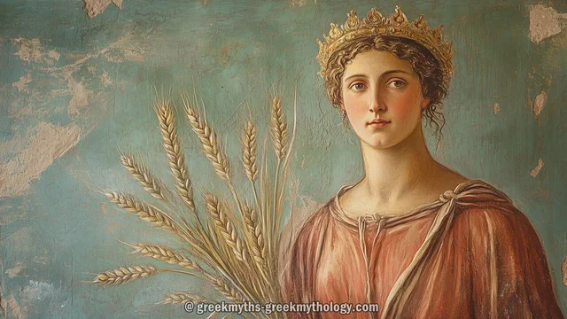
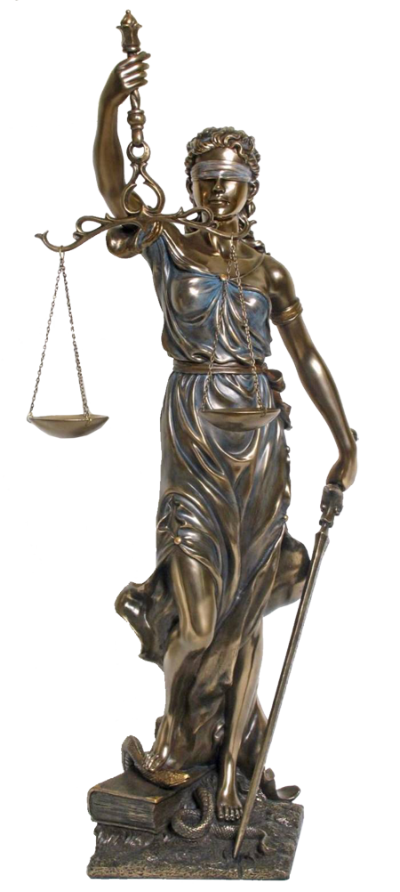
Artemisa
Artemisa es la diosa griega de la caza, la naturaleza salvaje, los animales, la castidad y la luna, conocida por su independencia y habilidad con el arco. Hija de Zeus y Leto, y hermana gemela de Apolo, protege a las mujeres jóvenes y los partos. Se representa con arco y flechas de plata, a menudo acompañada de ciervos.
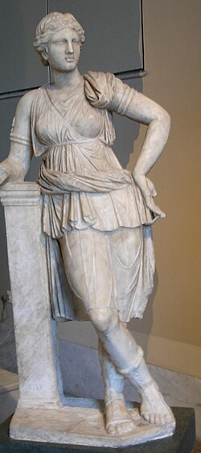
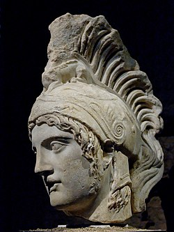
Ares
Ares es el dios griego de la guerra, hijo de Zeus y Hera, que representa la brutalidad, la violencia y la fuerza bruta del combate. A diferencia de Atenea, simboliza el lado más sangriento y destructivo de la guerra. Es una figura central de la mitología, conocido por su romance con Afrodita y su papel en el Olimpo.

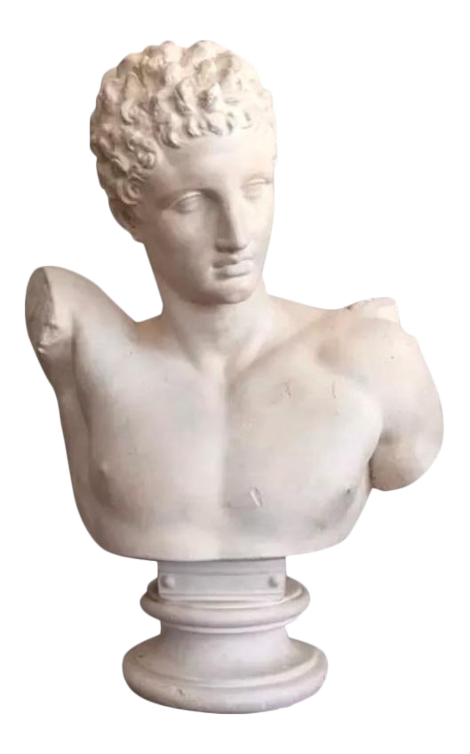
Hermes
Hermes es el dios olímpico mensajero en la mitología griega, hijo de Zeus y Maya, reconocido por su astucia, velocidad y elocuencia. Patrón de viajeros, comerciantes, pastores y ladrones, actúa como guía de almas al inframundo (psicopompo) y conecta los mundos divino y mortal. Identificado como Mercurio por los romanos, usa sandalias y casco alados y porta el caduceo.
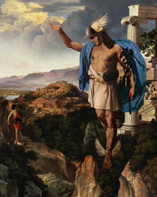
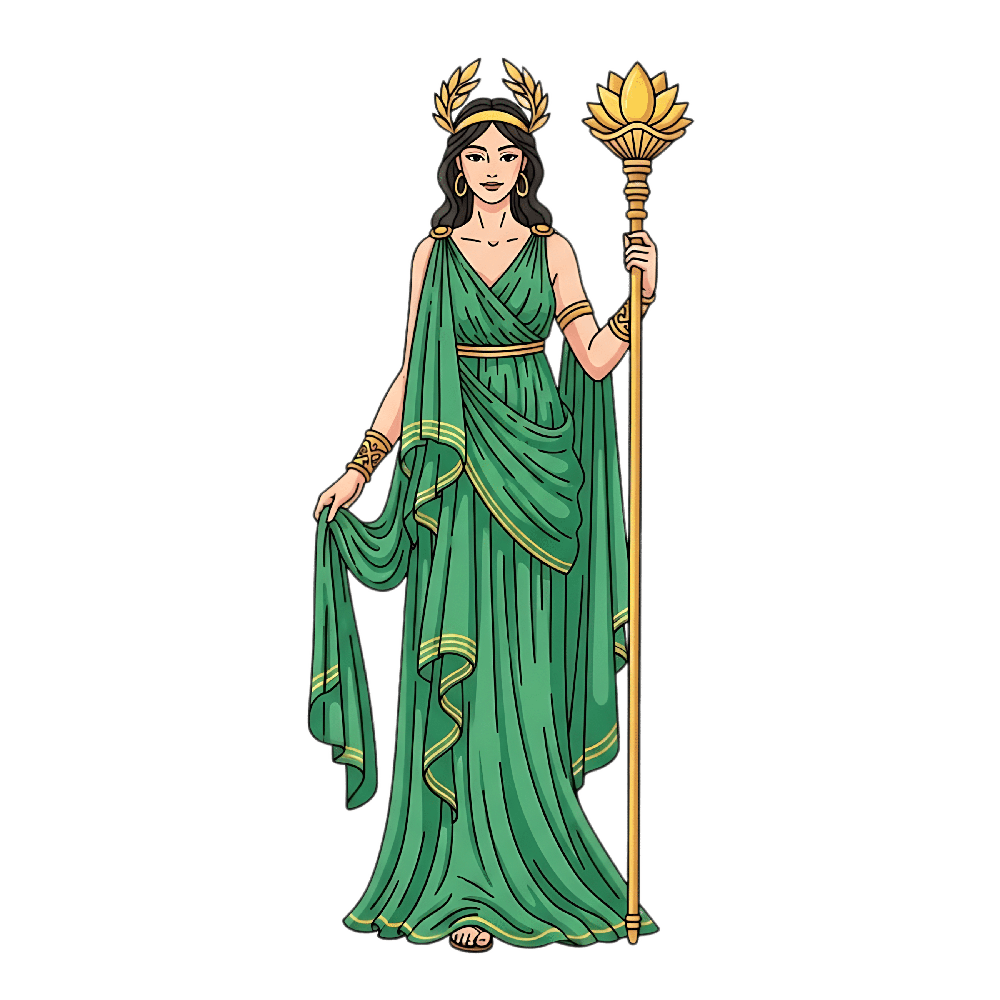
Atenea
Atenea es una de las deidades más importantes de la mitología griega, reconocida como la diosa de la sabiduría, la estrategia bélica, la justicia y las artes. Hija favorita de Zeus, nació de su cabeza ya adulta y armada, siendo la protectora de héroes como Odiseo y Heracles, y patrona de la ciudad de Atenas.
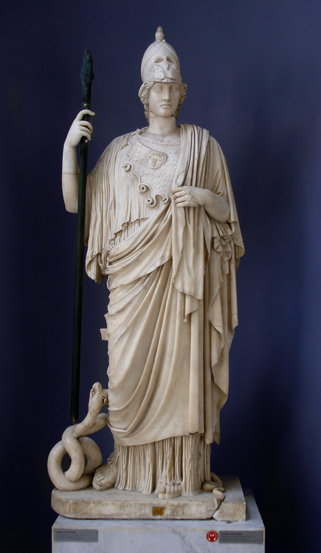
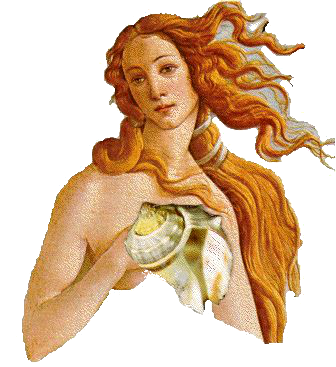
Afrodita
Afrodita es la antigua diosa griega del amor, la belleza, el deseo y la sexualidad, reconocida como una de las doce deidades olímpicas. Nacida de la espuma del mar tras la castración de Urano según Hesíodo, o hija de Zeus según Homero, su equivalente romano es Venus. Es símbolo de seducción y atracción.
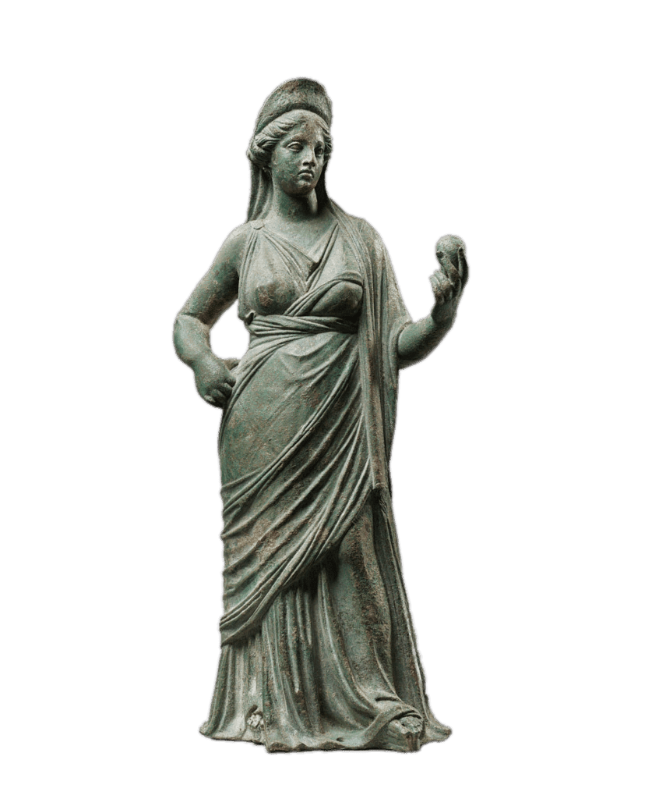
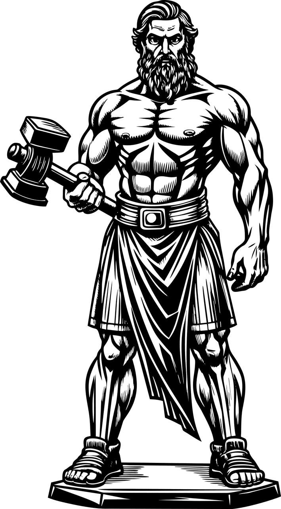
Hefesto
Hefesto es el dios griego de la forja, el fuego, la metalurgia y los artesanos, conocido por ser el herrero divino que fabricó las armas y artefactos de los dioses olímpicos, incluidos los rayos de Zeus y la armadura de Aquiles. Hijo de Hera (a veces con Zeus), fue arrojado del Olimpo por su fealdad, lo que le causó su característica cojera.
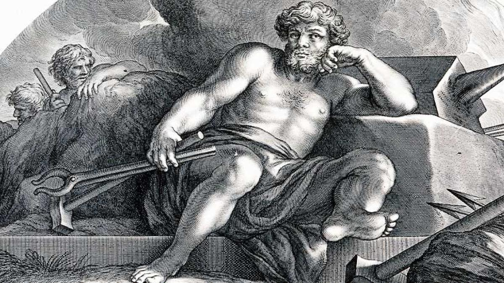
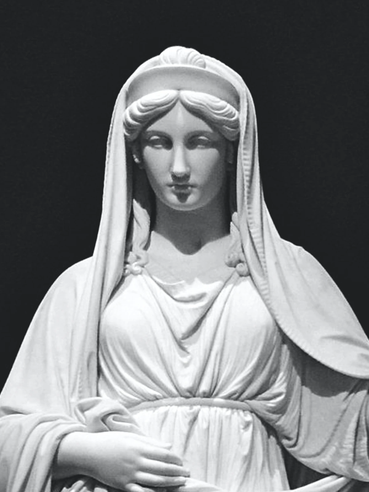
Hestia
Hestia es la diosa griega del hogar, la familia, la hospitalidad y el fuego sagrado del hogar. Como una de las doce deidades olímpicas, Hestia representa la estabilidad, la paz y la armonía doméstica. Era una de las tres diosas vírgenes (junto a Atenea y Artemisa), hija primogénita de los Titanes Cronos y Rea.
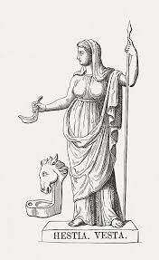